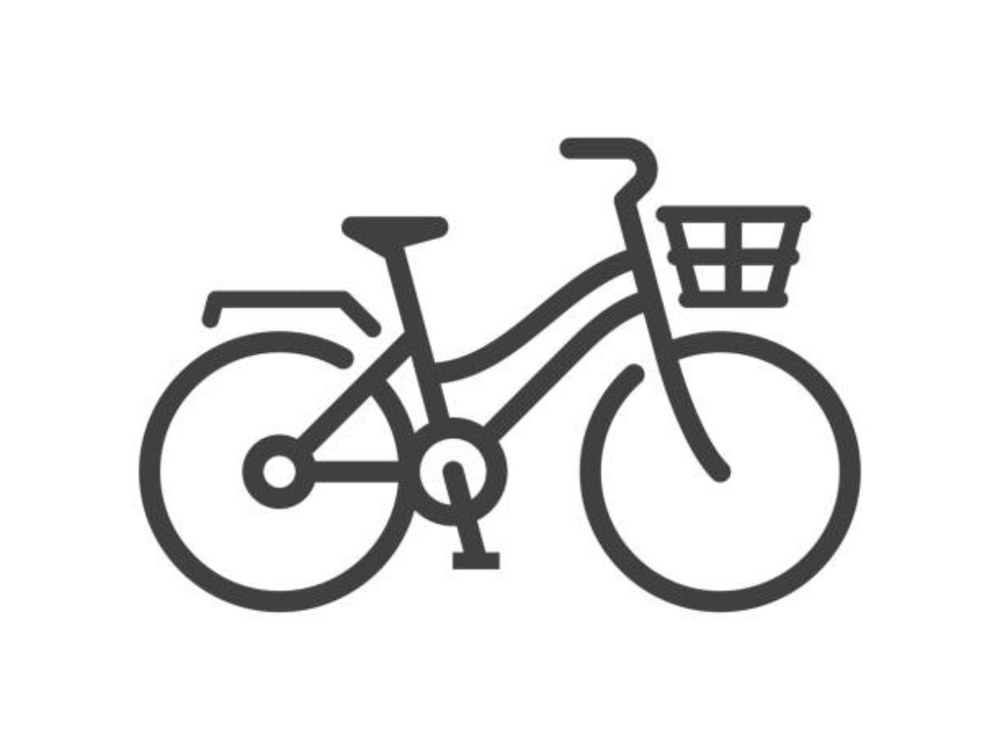
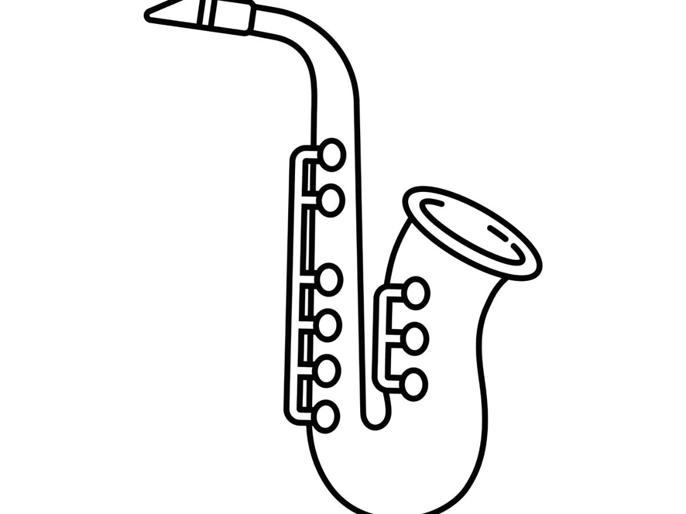
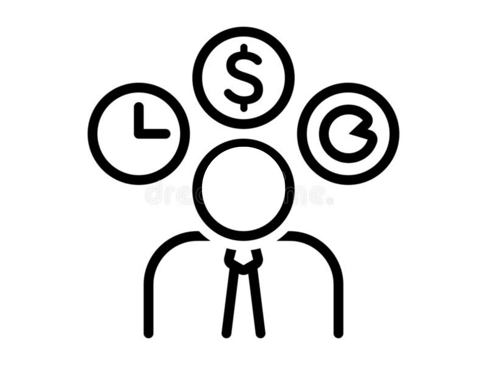

Clips

This is an article I wrote for the Diamondback about a five-mile clean up hosted by the University
of Maryland Sustainable Ocean Alliance Club.

This is an article I wrote for the Diamondback about Saxophonist Walter Smith showcasing his new
album at the Clarice Smith Performing arts center

While working with Adobe Premiere Pro, I directed, filmed, and edited a profile story on a
University of Maryland Entrepreneur.